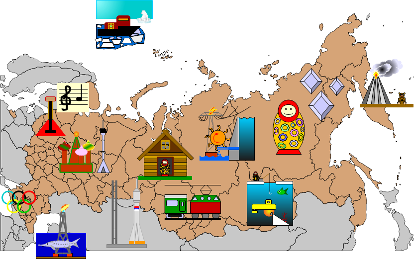

Schulprojekt Russland
Klicke auf ein Bild, um mehr zu erfahren...

Kunstvolle Holzhäuser
Teekultur mit dem Samowar
Wikipedia
Russlands Flüsse und die Wasserkraft
Lied über die Wolga
Staustufen der russischen Flüsse (Diagramm)
Wolgograder Stausee
Kuibischefer Stausee
Matroschka- die berühmteste Russin
Matroschkamuseum in Moskau (Doku)
Diverse Matroschkas
Transsib - mit 9288 km die längste Eisenbanhstrecke der Welt!
Wikipedia
Fahrpläne, Strecke etc.
Diamanten und andere Bodenschätze in Russland
Der Orlow- Diamant: Schatz des Zaren
Diamantenförderung in Archangelsk (Doku)
Diamantmine in Udatschny
Doku über synthetische Diamanten (russisch)
Edelmetalle
Paltinförderung in Russland (Doku russisch)
Musik
ololo.fm: aktuelle, russische Musik downloaden
Radio
Russische Chansons
Moskau und Petersburg, Russlands Hauptstädte
Moskau
Moskau, Panorama
Moskau, Kremel bei Nacht, Panorama
Moskau- Universität, Panorama
Moskauer Fernsehturm- eines der höchsten Türme der Welt
St. Petersburg
Petersburg, Panorama
Petersburg Schloss, Panorama
Kamchatka, wilde Halbinsel im Pazifik
Vulkan Plosky Tolbatchik, Panoramavideo
Kamtschatkas Vulkane aus dem All fotografiert (FAZ 12.3.2013)
Sotchi- Schwarzes Meer und Olympische Winterspiele
Wikipedia
Offizielle Seite der Winterspiele 2014
Kaspische Meer, Kaviar und Erdöl
Das Kaspische Meer, Wikipedia
Kaviar- Wikipedia
Der Stör- die Quelle des Kaviars
Doku Kaspisches Meer
Impressionen
Das Kaspische Seemonster
Kazan- der Orient mitten in Russland
Baikal, tiefster Süßwassersee der Erde
Baikal See, gefroren, Panorama
Sonnenuntergang auf dem Baikal See
Irkutsk, Großstadt am Baikal
Mit dem Tragflächenbot über den Baikal rasen
Fahrt mit dem Katameran
Baden ...
Wandern am Ufer
Autofahrt durch die Taiga
Auf dem Weltraumbahnhof Baikonur
Sojus- Rakete, das Arbeitspferd der Raumfahrt
Sojus Raumschiff koppelt an Raumstation an
Animation einer Sojus- Mission
Bernd Leitenberger: russische Raketen
Atomeisbrecher- auf zum Nordpol!
Fahrt zum Nordpol (Doku in englisch)
Fahrt zum Nordpol mit dem Atomeisbrecher "50 Jahre Sieg"
Atomeisbrecher